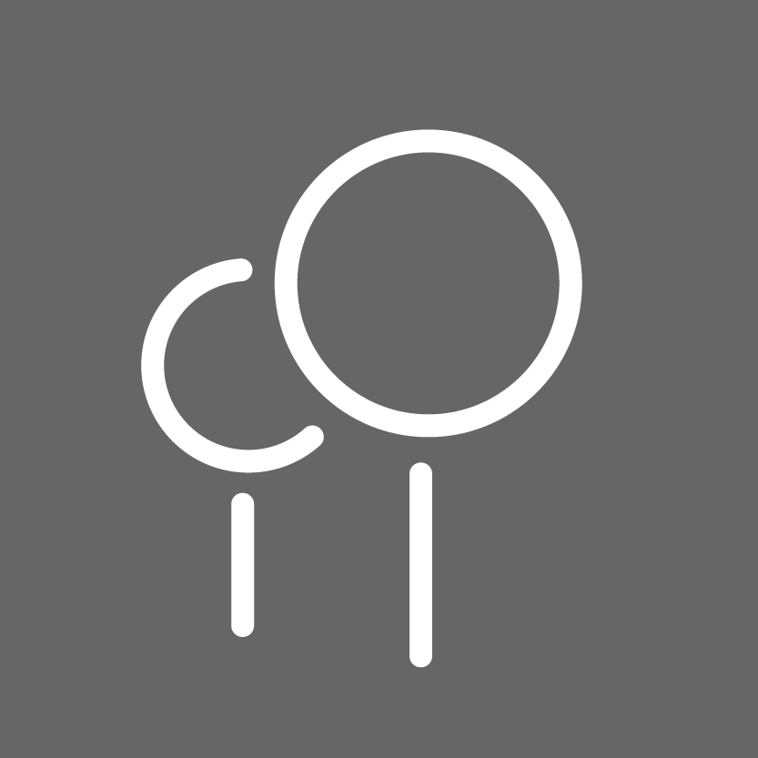

Povolte prohlížeči přístup k umístění a fotoaparátu
Povolení jsou vyžadována pro lepší zážitek z rozšířené reality.
Oprávnění k poloze slouží k přesnému umístění modelu v křižovatce a oprávnění ke kameře slouží k zobrazení modelu na mobilním zařízení.
Tato stránka nikdy neukládá a nebude ukládat informace o poloze ani případně ukládat záběry z kamery zařízení.
Potvrďte vyskakovací okno pro zobrazení polohy křižovatky
Pokud vyskakovací okno nepotvrdíte, zobrazí se model v místě vaší aktuální polohy.
Projděte se po náměstí
Pokud máte nějaké problémy, řešení najdete v dolní části často kladených otázek nebo můžete
problémy/nápady/tipové připomínky zaslat na e-mail uvedený v dolní části stránky.
Ovládání modelu
V aplikaci jsou k dispozici 3 tlačítka. Zapnutím tlačítka se zobrazí prvek modelu zobrazený na tlačítku. Aplikace umožňuje tyto objekty skrýt/zobrazit:
popis významných prvků modelu

stromy
návrh budoucí budovy
Často kladené otázky a odpovědi
Pozadí za modelem je bílé
Nejčastěji se jedná o problém neautorizovaného fotoaparátu v prohlížeči.
Pokud jste v prohlížeči povolili kameru, je možné, že používáte prohlížeč, který není touto aplikací podporován.
Pokud je to možné, zkuste použít prohlížeč Chrome nebo Firefox.
Model neustále mění polohu
Zkontrolujte kvalitu signálu GPS nebo zkuste zkalibrovat mobilní kompas, například pomocí aplikace Google Maps.
Chci změnit umístění zobrazení
Stačí znovu načíst stránku a zvolit novou polohu (ne)potvrzením vyskakovacího okna s textem Chcete zobrazit model na křižovatce Křídlovická?.
Primárním cílem projektu je pomocí moderních technologií přispět k zatraktivnění městského plánování.
Sekundárním cílem je zapojení obyvatel do procesu tvorby komunitního veřejného prostoru.
Projekt vznikl v rámci bakalářské práce Fakulty informatiky Masarykovy univerzity ve spolupráci se studenty Fakulty architektury VUT v Brně v roce 2023.